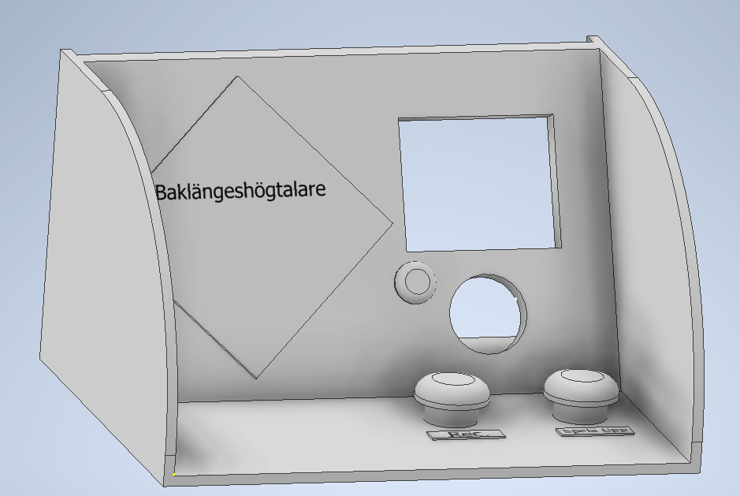

Hi, my name is Peter Båth and im a media-technician and web develepor
I enjoy working on media-related projects and continuously learning new things, with a strong passion for music and sound. I always look forward to new challenges and firmly believe that my skills and positive attitude are valuable assets in any professional role. I am receptive to acquiring new knowledge and relish the opportunity to meet new people. I am a self-learner who is accustomed to seeking solutions to problems and taking responsibility for my tasks.
I am a cheerful and proactive individual who is constantly eager to acquire new knowledge and explore opportunities in both life and work. I consistently work hard to achieve my goals.
I have a technical background, having pursued the Technology Program with a focus on Design and Product Development at LBS in Halmstad. And recently, gratuated as a Media Technician specializing in digital audio production at BTH (Blekinge Institute of Technology).
Work
During my 3 years at Blekinge Institute of Technology, I have been involved in several multimedia projects, and more recently, I have rekindled my interest in web development. Below, you will find some of the major projects I have worked on, as well as my skills and competencies.
RWD
Javascript
Typescript
HTML
CSS



This website
During the summer of 2023, I made the decision to revisit HTML, CSS, and JavaScript. I aimed to create a portfolio where I have complete control over the style, look and content, showcasing the skills I acquired during my life.